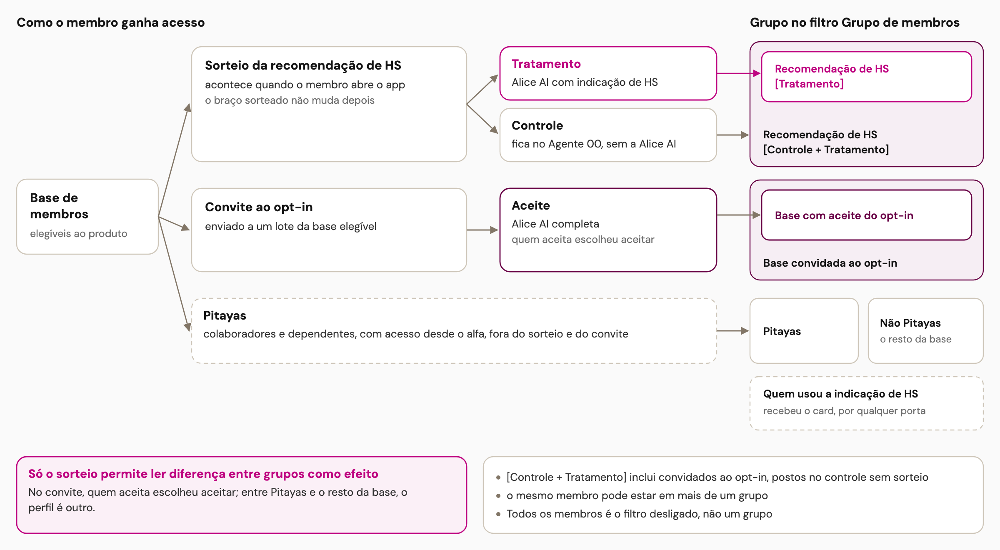
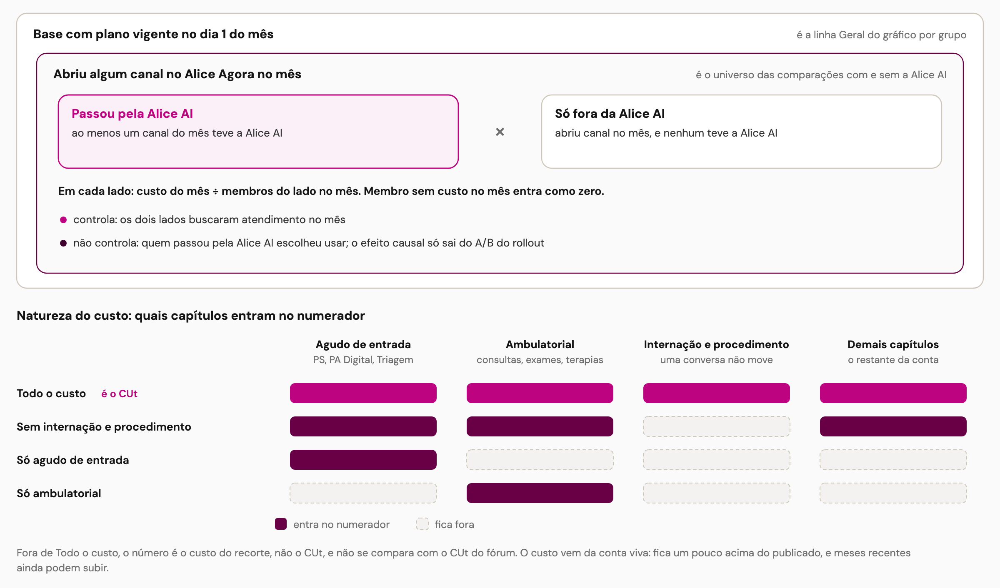
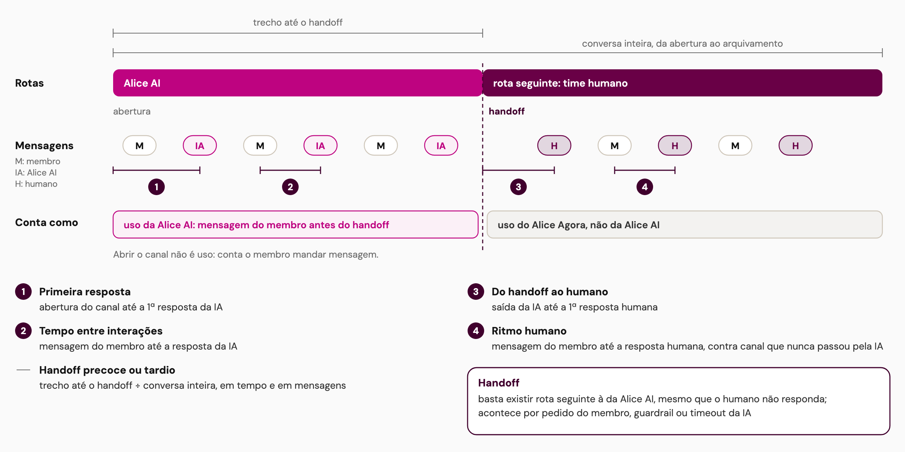
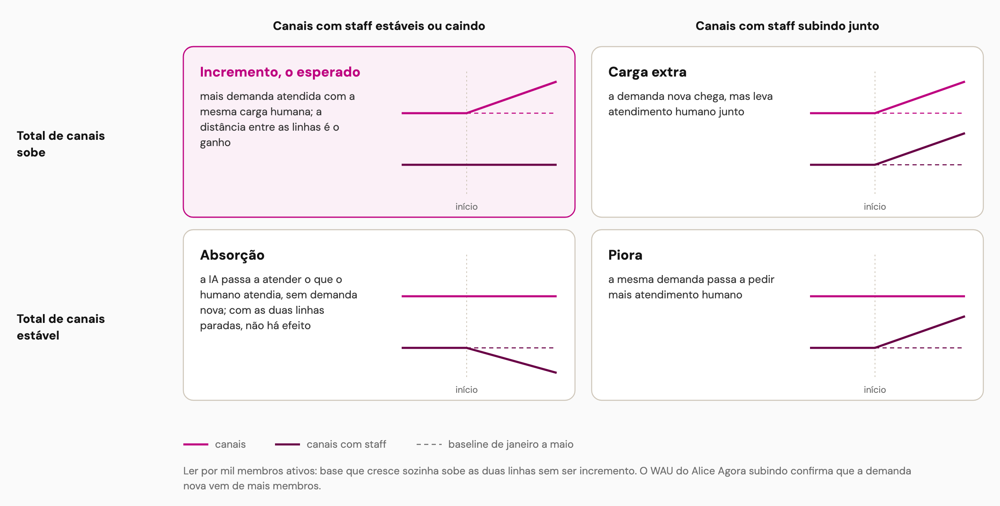
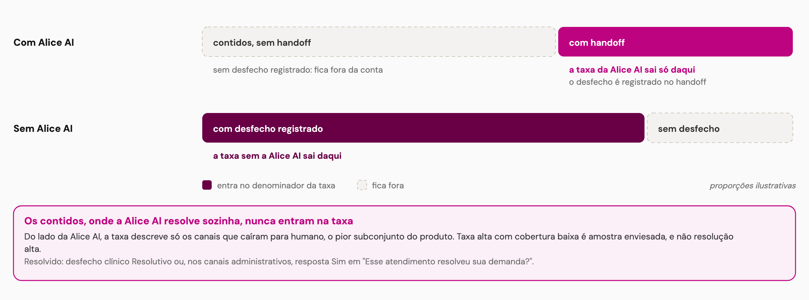
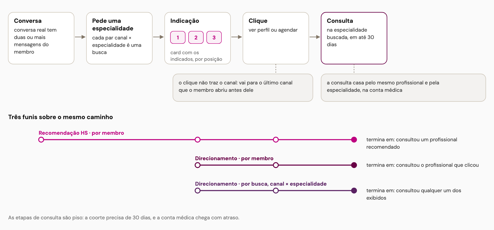
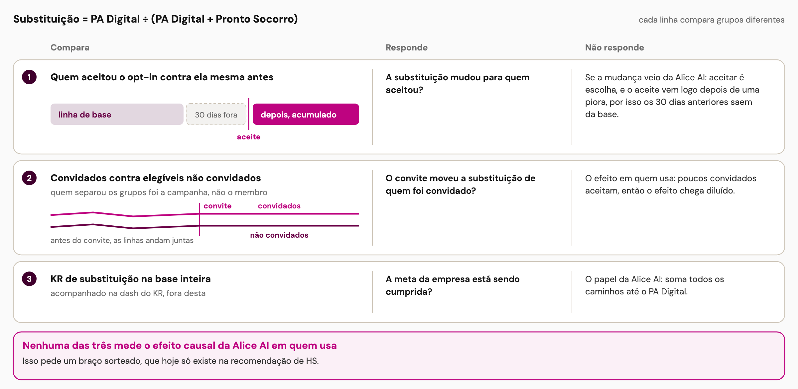
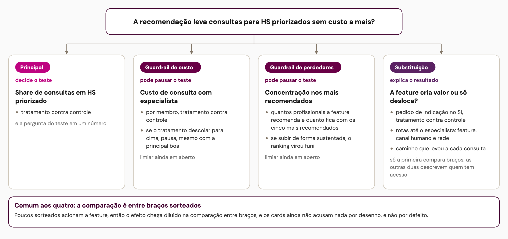

Dash da Alice AI
Como ler os números da dash: quem tem acesso, quem entra em cada comparação, onde cada tempo é medido e o papel de cada métrica.
1. Quem tem acesso à Alice AI e em que grupo cai
Só o sorteio permite ler diferença entre grupos como efeito; no convite, quem aceita escolheu aceitar.

2. Quem entra na comparação de custo
Os dois lados abriram canal no mês; o filtro Natureza do custo muda quais capítulos entram no numerador.

3. Anatomia de um canal: o que é uso e onde cada relógio corre
Uso é mensagem do membro antes do handoff; cada tempo medido começa e termina em um ponto do canal.

4. Como ler o incremento
Só o quadrante do incremento confirma a tese: mais canais sem mais canais com staff.

5. A taxa de resolução da Alice AI só vê os canais que caíram
Os contidos não têm desfecho registrado e nunca entram na taxa.

6. Da conversa à consulta
Três funis de indicação sobre o mesmo caminho, com começo e fim diferentes.

7. Substituição de PS: três comparações, três respostas
Nenhuma das três mede o efeito causal da Alice AI em quem usa.

8. Árvore de métricas do teste da recomendação
A principal decide, os guardrails podem pausar e as de substituição explicam o resultado.
